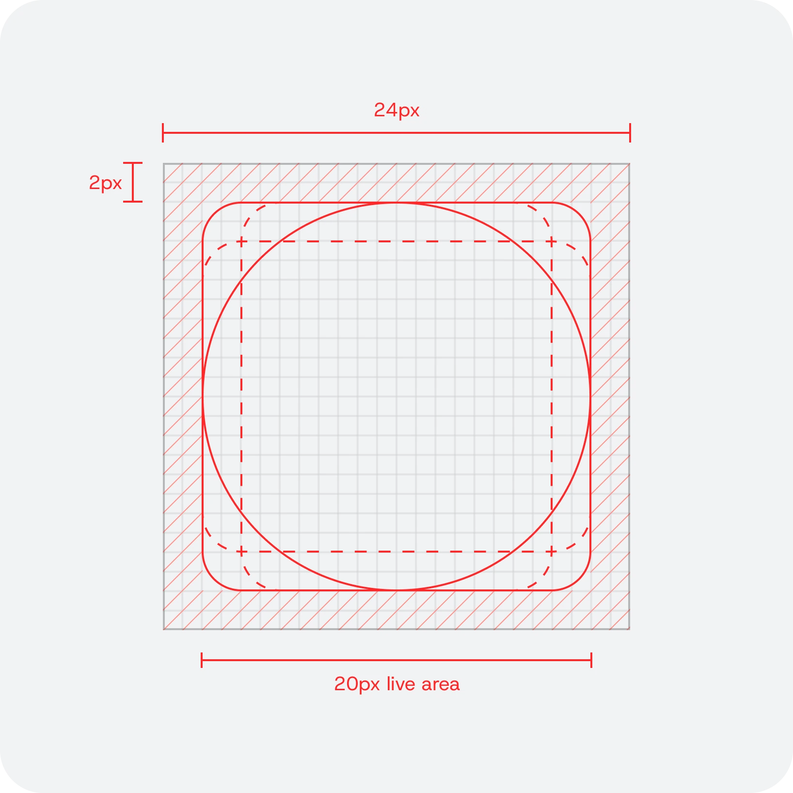
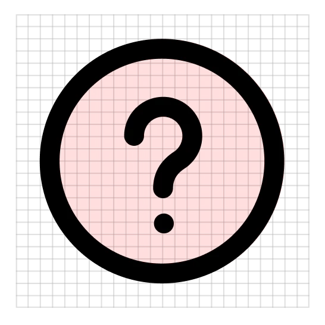
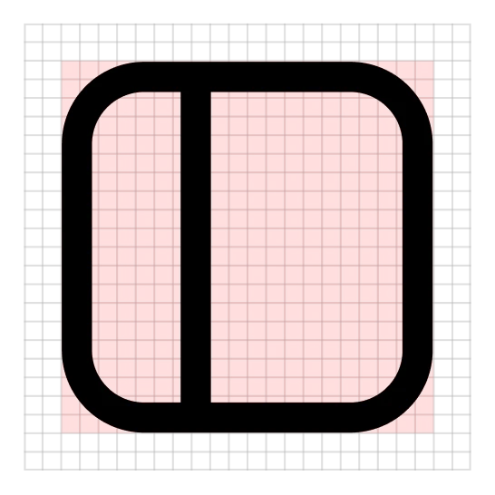
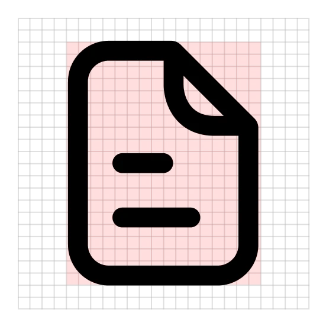
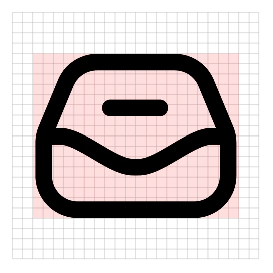
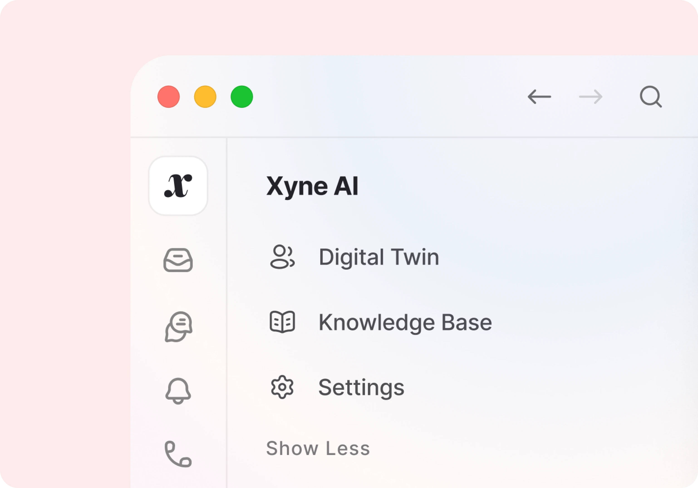

Product Iconography System
Xyne Space is a collaborative workplace communication tool that brings teams' workflows into one place, so they no longer have to switch between tools. I designed its product iconography library: 135+ icons across 45+ core metaphors, built from clean geometric shapes on a shared grid, with one stroke weight and consistent rounded corners.
The system comes in three styles, and each one maps to a level of emphasis. Outline is the default for navigation, Duotone handles hover and secondary moments, and Solid marks active states. All three share the same silhouette, so icons switch between states without shifting and stay recognizable at every size.
Built on a 24px canvas
Every icon sits inside a 20px live area with 2px of breathing room. Four keyline shapes set the proportions, so a circle, a square and a document carry the same weight side by side.





Anatomy
One stroke weight, round caps and joins, and a 4px corner on every container. Small details are sized to the stroke and held clear of the outline, so they survive at 16px.
Characteristics
A few deliberate habits give the set its personality without costing clarity.
Details knock out
In solid, text lines, dots and marks become cut-outs, so an icon keeps its meaning at full fill.
Forms that float
Heads never touch bodies. The gap between them equals the stroke weight, which keeps people icons open at small sizes.
One mark for text
Short rounded bars stand in for text wherever text appears, from documents to threads to tasks.

The library
45 metaphors across six families, each drawn in three styles.